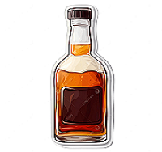
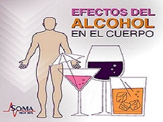

¿Por qué sucede?
Principales motivos: Se utiliza frecuentemente como mecanismo de escape para lidiar con problemas emocionales, trastornos como la ansiedad y la depresión, el estrés crónico o traumas no resueltos.
Riesgos de tomar a temprana edad: Comenzar a consumir alcohol a una edad temprana altera el desarrollo cerebral y aumenta drásticamente el riesgo de dependencia futura.
Otros: La normalización del consumo en reuniones, la presión del grupo de amigos (especialmente en jóvenes) y la alta disponibilidad o fácil acceso a las bebidas alcohólicas.

Principales consecuencias:
El consumo de alcohol altera el sistema nervioso central y afecta a la mayoría de los órganos. Sus consecuencias abarcan desde alteraciones físicas y mentales inmediatas, como accidentes y resacas, hasta daños crónicos severos y enfermedades graves si se consume de manera prolongada o en exceso. Provoca destrucción neuronal, pérdida de memoria, problemas de concentración y, a largo plazo, riesgo de demencia. Aumenta la presión arterial, los triglicéridos, y puede derivar en cardiopatías o accidentes cerebrovasculares.
El alcoholismo es una enfermedad crónica que requiere un enfoque integral. Las soluciones más efectivas combinan atención médica profesional, terapia psicológica, grupos de apoyo y, en muchos casos, medicamentos. Desintoxicación: Es la etapa inicial para superar la dependencia física. Puede realizarse de forma ambulatoria o mediante internamiento, siempre bajo supervisión médica para manejar el síndrome de abstinencia de manera segura. Tratamiento farmacológico: Existen medicamentos aprobados (como la Naltrexona, Acamprosato y Disulfiram) que ayudan a bloquear los efectos placenteros del alcohol, reducir la ansiedad por consumirlo o provocar efectos desagradables si se ingiere. Terapia psicológica: Aborda las causas emocionales o conductuales subyacentes a través de la terapia cognitivo-conductual, ayudando a modificar hábitos, evitar recaídas y desarrollar nuevas habilidades para manejar el estrés.